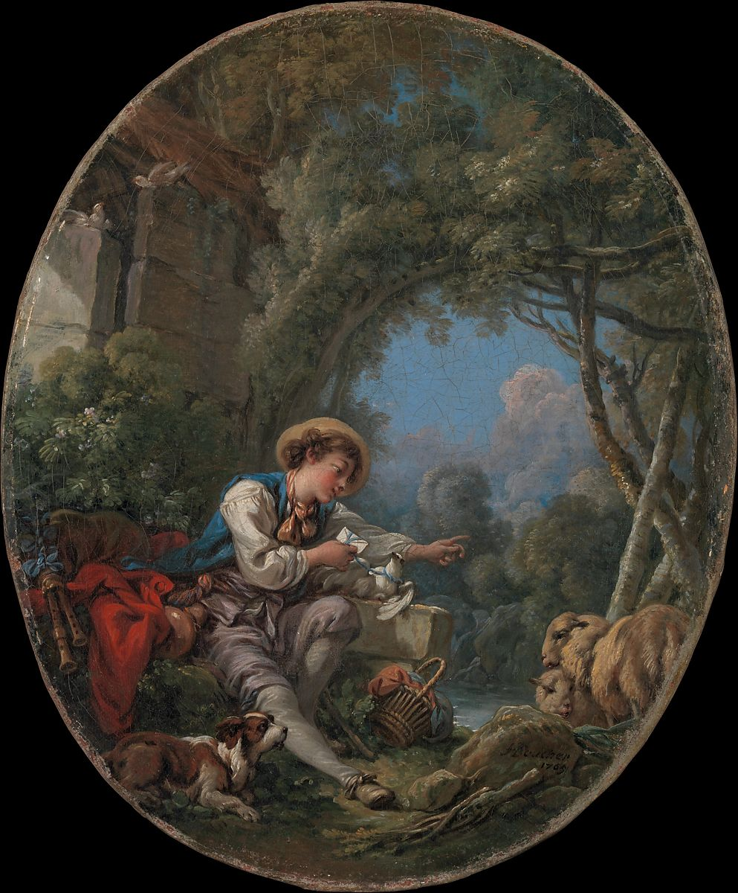

<head>
<meta charset="UTF-8" />
<meta name="keywords" content="drawing, painting" />
<meta name="description" content="drawings by Sunjy" />
<title>Sunjy</title>
<link rel="shortcut icon" type="image/x-icon" href="../../mImages/mCommon/favicon.ico" media="screen" />
<link rel="stylesheet" type="text/css" href="../../mCsses/mCommon/mCssA.css" />
<link rel="stylesheet" type="text/css" href="../../mCsses/mCommon/mCssB.css" />
<link rel="stylesheet" type="text/css" href="../../mCsses/mCommon/mCssC.css" />
<link rel="stylesheet" type="text/css" href="../../mCsses/mCommon/mCssD.css" />
<link rel="stylesheet" type="text/css" href="../../mCsses/mContent/mCssA.css" />
<link rel="stylesheet" type="text/css" href="../../mCsses/mContent/mCssB.css" />
<link rel="stylesheet" type="text/css" href="../../mCsses/mContent/mCssC.css" />
<link rel="stylesheet" type="text/css" href="../../mCsses/mContent/mCssD.css" />
</head>
<script type="text/javascript" src="../../mScripts/mContent/mContentAA.js" /></script>
<script type="text/javascript" src="../../mScripts/mContent/mContentAB.js" /></script>
<script type="text/javascript" src="../../mScripts/mContent/mContentAC.js" /></script>
<script type="text/javascript" src="../../mScripts/mContent/mContentAD.js" /></script>
<script type="text/javascript"></script> 
<script type="text/javascript">
document.write('<div class="mImgAbsolute"></div>');
/*
document.write('<p class="mFontSizeBColor" />From a white paper...</p>');
document.write('<table class="center"><tr><td>');
document.write('');
document.write('</td></tr></table>');
*/
</script>


<script type="text/javascript">
document.write('<p class="mFontSizeBColor" />The Dispatch of the Messenger</p>');
document.write('<p class="mFontSizeSColor" />By Francois Boucher, 1765. At the Salon of 1765, Boucher exhibited this painting with three others in order to form the narrative of a simple love story: a second painting depicted the arrival of the dove carrying a love letter, a third a showed a shepherdess read the letter aloud to her confidante, and the fourth depicted the lovers finally meeting. <br><br>Denis Diderot, often a harsh critic of Boucher, praised the four paintings as “a charming little poem,” but he condemned the falsity of the pastoral genre, comparing it to country life as represented in French opera. </p>');
document.write('<table class="center" /><tr><td>');
document.write('<br>Denis Diderot, often a harsh critic of Boucher, praised the four paintings as “a charming little poem,” but he condemned the falsity of the pastoral genre, comparing it to country life as represented in French opera. " />');
document.write('</td></tr></table>');
</script>


